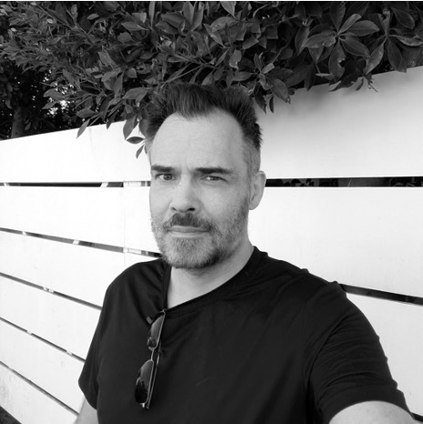
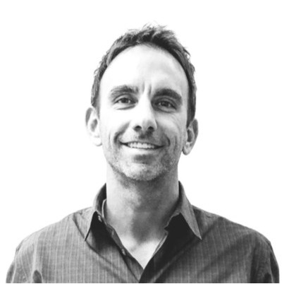

ReMade Trade is a sourcing and pipeline platform that helps organizations reduce waste costs, unlock value from industrial byproducts, and access local reclaimed materials — with built-in reporting at every step.
Let's connectThe problem
Valuable materials go to landfill every day, not because there's no demand for them, but because there's no infrastructure.
The platform
Waste producers upload current and upcoming material listings with specs and availability date. Makers submit requirements, creating a structured demand profile.
The proprietary algorithm pairs supply and demand with the most profitable and sustainable downstream use, enabling connections more efficiently than manual sourcing.
Integrated logistics manages storage or transport connections within the platform. No external broker required.
An automated reporting layer that generates waste diversion and emissions data directly from transaction records.
Who we serve
Reduce landfill volume and fees
Manage waste inventory more efficiently
Gain automated compliance documentation that satisfies zero-waste and sustainability goals
Streamline materials sourcing
Build sustainable supply chains that don't depend on virgin resources or broker markups
Gain valuable chain-of-custody history for materials
Team
20+ years in partnerships, entertainment, sustainability, and project leadership managing multi-million dollar global franchises. Working on live events and production, she saw firsthand how much valuable material gets discarded — and was inspired by a parallel world of makers building extraordinary things from reusable materials. That gap became the foundation for ReMade.

20+ years in corporate strategy, finance, and capital markets. Managed enterprise-level complex corporate programs, acquisition integrations, and divestitures. Brings financial structuring, growth leadership, and business scaling expertise critical to ReMade's commercial development.
Product and systems builder with experience across startups, enterprise integrations, marketplaces, and e-commerce. Specializes in taking products from zero to one and building the data infrastructure and processes that turn early traction into sustainable growth.
UX designer and researcher, providing support on customer discovery and journey, platform mapping and structure, and data analysis.
Consultant building sustainable growth strategies and implementing long-lasting value creation, financial strategy, business operations, ESG roadmap and implementation, climate reporting and risk management.

Creative and brand strategist with a career building teams, brands, and ideas that move business forward. An early adopter of technology-driven creativity, focused on scaling innovation and culture.
Whether you're generating industrial waste, sourcing reclaimed materials, or want to learn more — we'd like to hear from you.
Contact Us